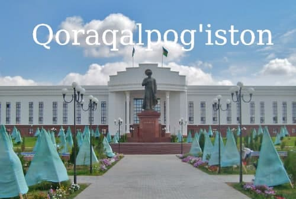

Qoraqalpogʻiston— Oʻzbekiston Respublikasi tarkibidagi respublika. Maydoni 166,6 ming km². Aholisi 2 millionga
yaqin (2022). Respublika poytaxti — Nukus shahri. Tarkibida 16 tuman, 12 shahar, 14 shaharcha va 124 fuqarolar
yigʻini bor.
Bosh sahifa